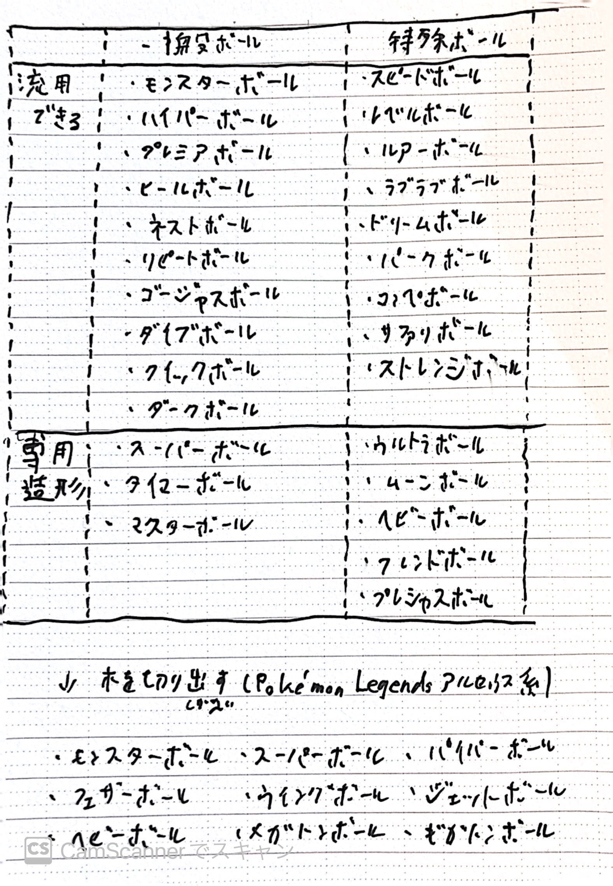

以下が分けた結果である。こうしてみるとほとんどが塗装の塗り分けで表現できることがわかる。また塗装についてはそのままでははじかれるので紙やすりでやすってから塗装を行う。
ゲーム内テキスト：野生のポケモンに 投げて 捕まえるための ボール。カプセル式に なっている。
ゲーム内テキスト：モンスターボールよりも さらに ポケモンを 捕まえやすくなった 少し 性能のいい ボール。
備考：専用造形
ゲーム内テキスト：スーパーボールよりも さらに ポケモンを 捕まえやすくなった すごく 性能のいい ボール。
備考：対戦で嫌われがち。
ゲーム内テキスト：なにかの 記念の品として 特別に つくられた ちょっとめずらしい ボール。
ゲーム内テキスト：野生のポケモンを 必ず 捕まえることが できる 最高性能の ボール。
備考：専用造形